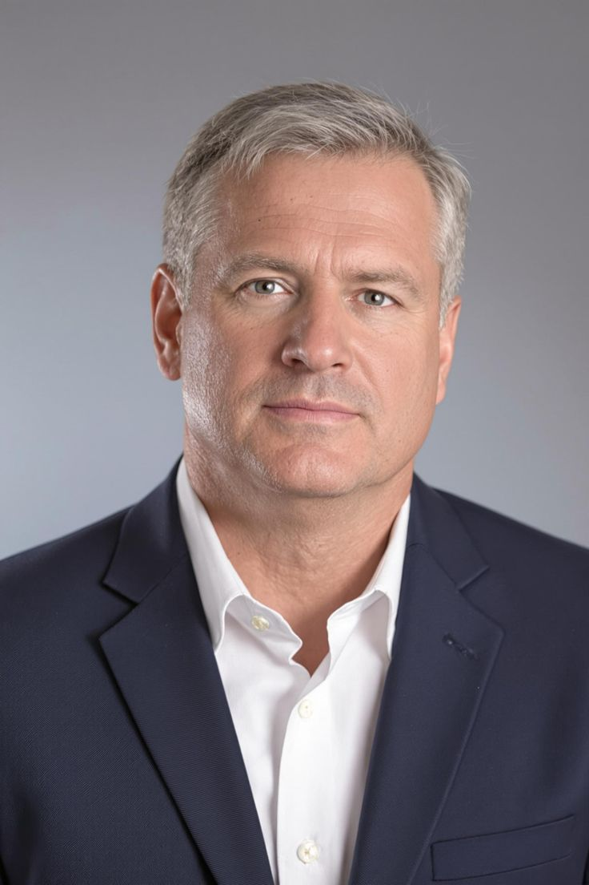

Our team works alongside caregivers, teachers and local leaders to support children across Uganda.

Executive Director
Joined: Founding member, 2025
History: A Ugandan educator and community advocate who co-founded Save the Child Uganda after years of volunteering in local schools and reading programs.
Contributions: Set the organisation’s vision and strategy, built partnerships across Wakiso, Mukono and Jinja districts, and led fundraising to launch the first reading circles and caregiver wellbeing sessions.
Impact: Grew the organisation from a shared belief into a working program reaching hundreds of children across three districts in its first year.

Programs Lead
Joined: Early 2025
History: Community development specialist with experience running safe space activities and youth programs in Central Uganda.
Contributions: Oversees reading circles, caregiver sessions and safe space activities at the four community centers; trains volunteer facilitators and coordinates district-level program delivery.
Impact: Expanded program reach from one district to three, and established four active community centers hosting regular activities.
Community Coordinators
Joined: Mid 2025
History: Local leaders from each supported district who bridge the organisation and the families it serves.
Contributions: Work directly with families and local leaders to deliver programs in each district, mobilise caregivers for sessions, and keep the team grounded in community needs.
Impact: Ensured programs stay community-led and culturally relevant, driving strong caregiver participation and retention across Wakiso, Mukono and Jinja.
Monitoring & Evaluation Officer
Joined: Late 2025
History: Data and reporting specialist focused on tracking outcomes for children’s learning and wellbeing programs.
Contributions: Tracks program outcomes, collects caregiver and child feedback, and reports on impact across all supported communities; maintains records that guide program improvements.
Impact: Provided the first structured impact data for the organisation, including the 76% of caregivers reporting improved access to learning support for their children.